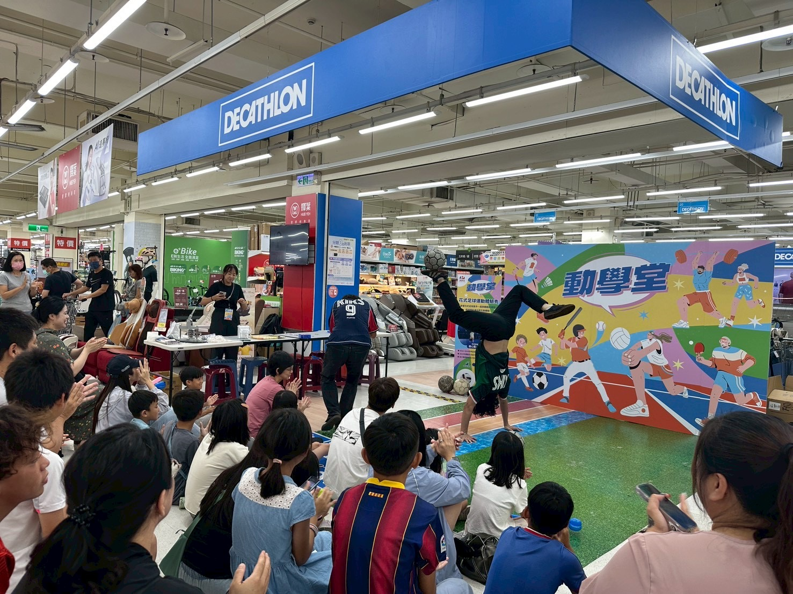
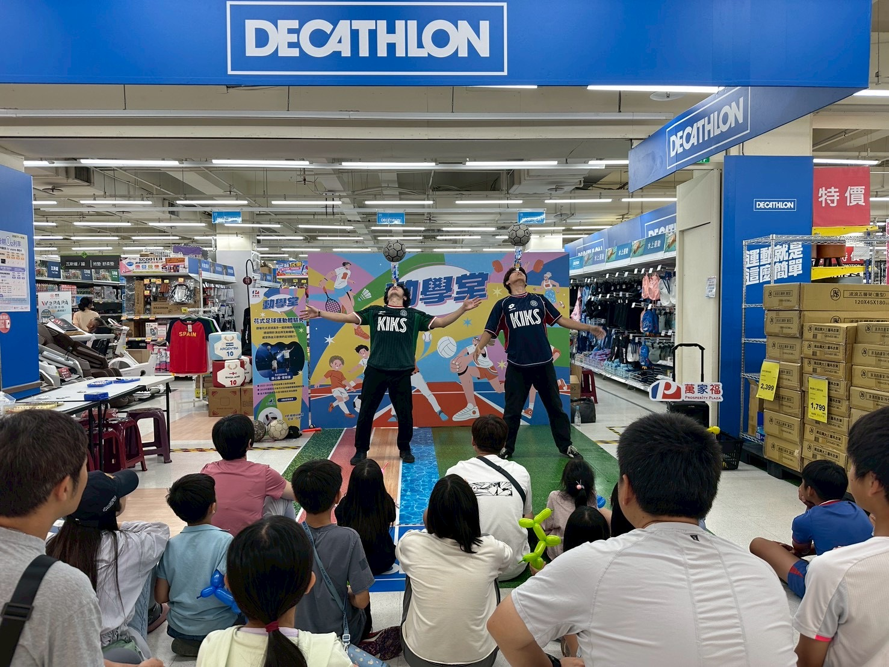
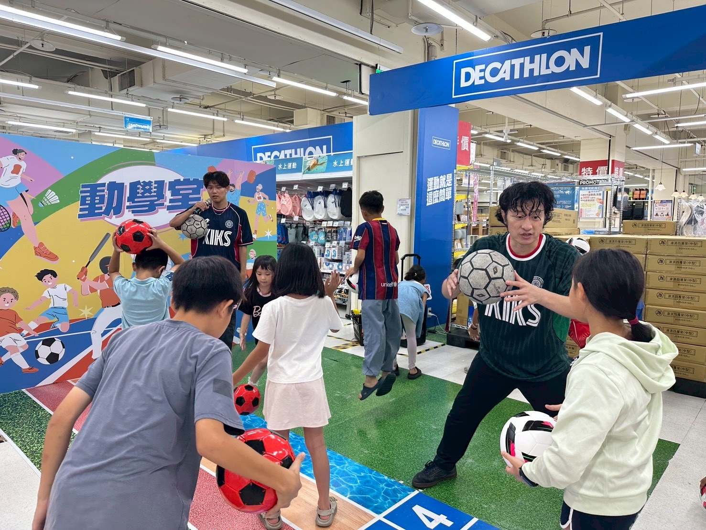
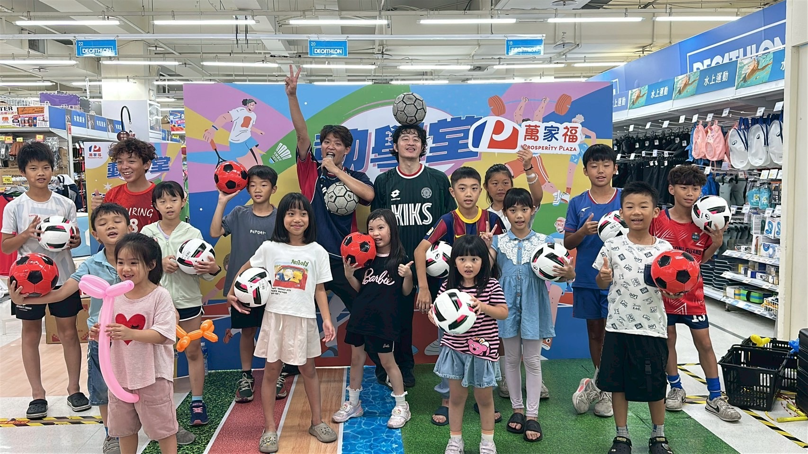

臺中夏日馬戲節
Juggling Battle 邀請賽・團體賽冠軍
Experience · Honors
從國際花式足球賽事、街頭藝術節、品牌活動到跨界舞台，累積比賽、創作、演出與教學經驗。

2026.07.18 · Hualien
配合 2026 世界盃期間活動，受邀前往花蓮萬家福進行花式足球演出與互動教學。從雙人技巧演出、現場控球挑戰，到帶領大小朋友近距離體驗花式足球，讓足球不只停留在賽事轉播，也真正走進觀眾的生活與現場。
家樂福近期以「萬家福」新名稱與大家見面，這次也透過世界盃主題活動，讓民眾在逛賣場的同時，感受足球、節奏與街頭藝術的熱血魅力。




VIDEO HIGHLIGHTS
01 · PERFORMANCE
以同步控球與搭檔默契，把技巧、節奏和舞台張力帶到觀眾眼前。
02 · WORKSHOP
讓大小朋友拿起足球親自嘗試，在挑戰與歡笑中認識花式足球。